Abortion in Canada
- There is no federal abortion law in Canada. Since R v Morgentaler (1988) it is treated like any other medical procedure. Access is guaranteed by the Canada Health Act but varies hugely by province, especially the gestational age limit.
- Most abortions are early and done outside hospitals. In 2022 there were 97,211: about 79% in non-hospital clinics, 60.5% surgical and 39.5% medical. No referral is needed.
- Medical abortion = mifepristone + misoprostol (Mifegymiso), up to 70 days (10 weeks), 95–98% effective. Mifepristone blocks the progesterone receptor (decidual necrosis, cervical softening, prostaglandin sensitivity); misoprostol is a PGE1 analogue that ripens the cervix and contracts the uterus.
- Surgical: MVA up to 10 weeks, D&C (suction) up to 14 weeks, D&E in the second trimester. Cervical prep with misoprostol or osmotic dilators. 98% of abortions have no complication at all; the commonest are hemorrhage, infection and retained products.
- Abortion is far safer than continuing the pregnancy (0.567 vs 7.06 deaths per 100,000) and does not cause infertility, breast cancer or mental illness. Ovulation can return 2 weeks after, so start contraception immediately: an IUD or Depo can go in the same day.
Learning Objectives
- Review pregnancy termination options in Canada.
- Compare options based on gestational age and describe the risks of abortion.
- Compare the risks of termination with the risks of pregnancy.
- Outline counselling about fertility and contraception.
Dr. Stephanie Black, generalist OB/GYN at LHSC, who provides this care herself. Contraception in detail is 4.3; the drugs are 4.4.
The Words
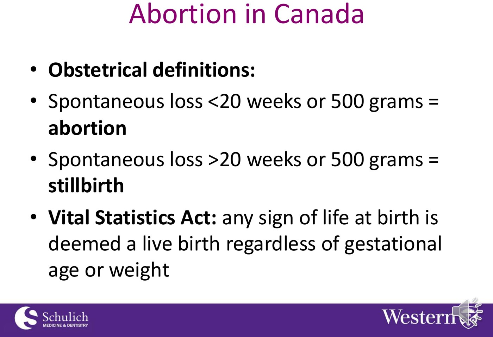
The obstetrical cut-offs: 20 weeks / 500 g separates an abortion from a stillbirth. Any sign of life at birth is a live birth, whatever the gestational age.| Term | Means |
|---|---|
| Abortion | Termination of a pregnancy by removal or expulsion of a fetus or embryo from the uterus |
| Spontaneous abortion | Miscarriage |
| Therapeutic abortion | Any induced abortion, whatever the reason |
"Abortion" in a chart may mean a miscarriage. Read which one is meant.
How Common It Is
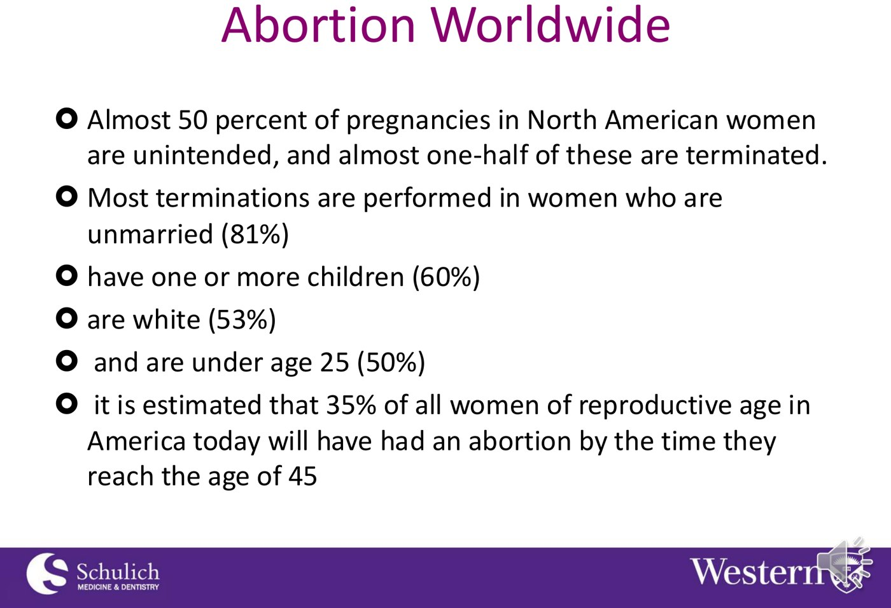
Who has abortions. 81% unmarried, but 60% already have at least one child, and half are under 25. About 35% of women will have had one by age 45.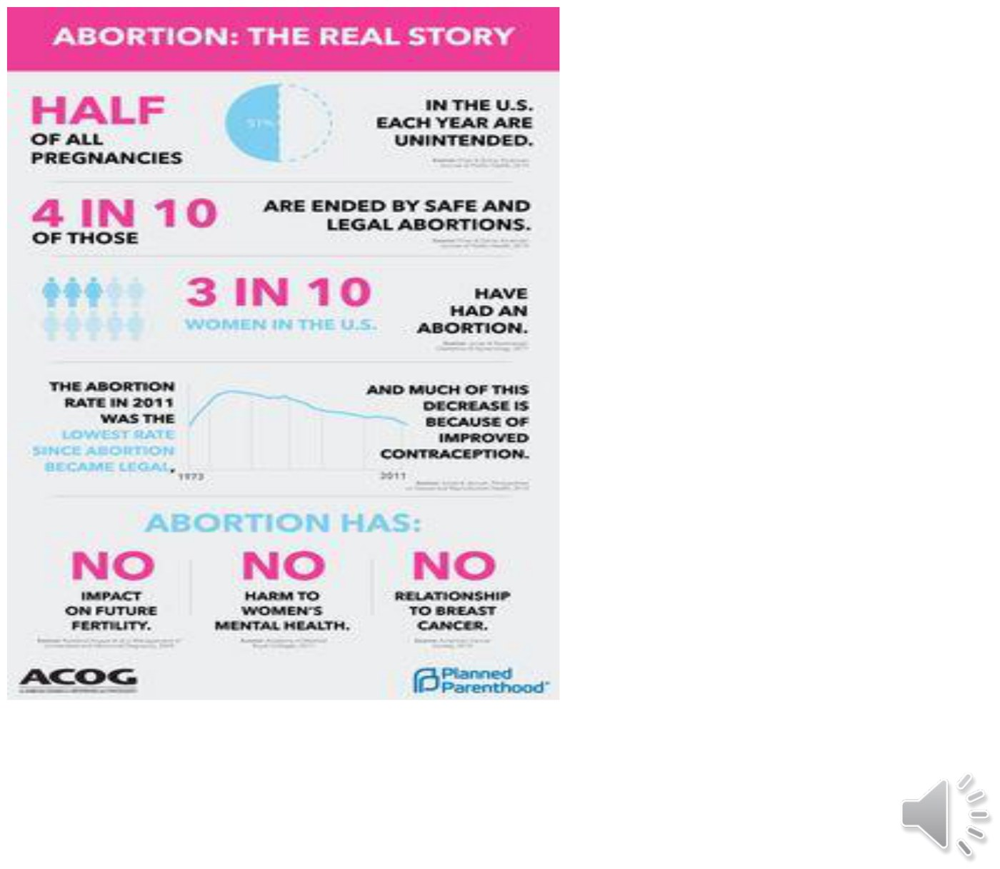
The three "no"s at the bottom are the evidence base for the myths section: no effect on fertility, no harm to mental health, no link to breast cancer.| Number | Meaning |
|---|---|
| 204 per 1,000 live births | Rate of termination (CDC 2021), roughly unchanged over 20 years |
| 11.6 per 1,000 women | International rate. 48% are still unsafe, and 97% of those are in developing countries |
| ~97,000 | Abortions reported in Canada in 2022 (the most recent data) |
| Half of pregnancies | Unintended: no contraception, contraceptive failure, ambivalence, or sexual assault |
The Law: How Canada Got Here
| Year | What happened |
|---|---|
| 1969 | Abortion permitted only in a hospital, if a committee of doctors decided the pregnancy endangered the woman's health or life. Strict criteria, long delays |
| 1982 | Charter of Rights and Freedoms: any law contravening it can be struck down |
| 1988 | R v Morgentaler: the Supreme Court strikes the abortion law down as unconstitutional, violating section 7 (life, liberty and security of the person) |
| 1989 | After a boyfriend obtained an injunction against Chantal Daigle, the Supreme Court rules that a father or male partner has no veto |
| 1990 | Bill C-43 (two years' jail for providers where health was not at risk) passes the Commons but dies on a tie vote in the Senate |
| 1995 | Rulings force Nova Scotia and New Brunswick to allow private clinics, but coverage outside hospitals stays inconsistent |
| Nov 2014 | New Brunswick drops the rules that an abortion must be done by an OB/GYN and certified in writing by two physicians |
| Jun 2015 | Abortion added to the inter-provincial billing agreement, so care is portable like every other procedure |
| Jul 2015 | Mifepristone approved by Health Canada (not actually available until 2017) |
| Jan 2017 | Abortion services available on Prince Edward Island for the first time |
| Today | No federal law at all. Abortion is legal, treated like any other procedure, governed by provincial and medical regulation |
Two things to take from the timeline. Most abortions in Canada are provided by family physicians in standalone clinics, not by specialists in hospitals. And the barriers that were lifted recently — two-doctor certification, paying out of pocket in another province — were lifted within the last decade.
Access: It Depends Where You Live
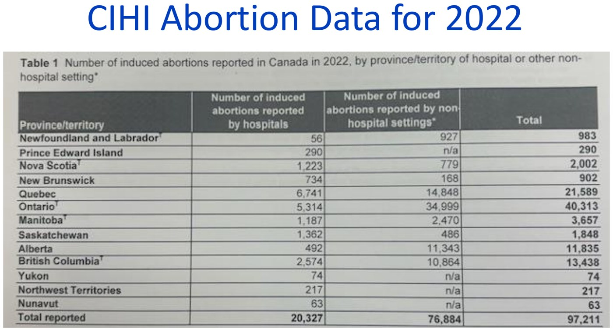
CIHI 2022: 97,211 abortions; 76,884 outside hospitals vs 20,327 in them.- Access is guaranteed by the Canada Health Act, but availability and the gestational limit vary across a very big country.
- In Ontario, OHIP covers abortion in both hospitals and clinics. Surgical abortion is provided up to about 24 weeks; induction abortion beyond 25 weeks exists at only one centre and is extremely limited. Beyond that, patients may be referred to cooperating clinics in the United States.
- Where the limits differ between the lecture's table and the spoken Ontario figure (23+6 vs 24+6), they reflect moving targets that change as services change.
When, and With What Complications
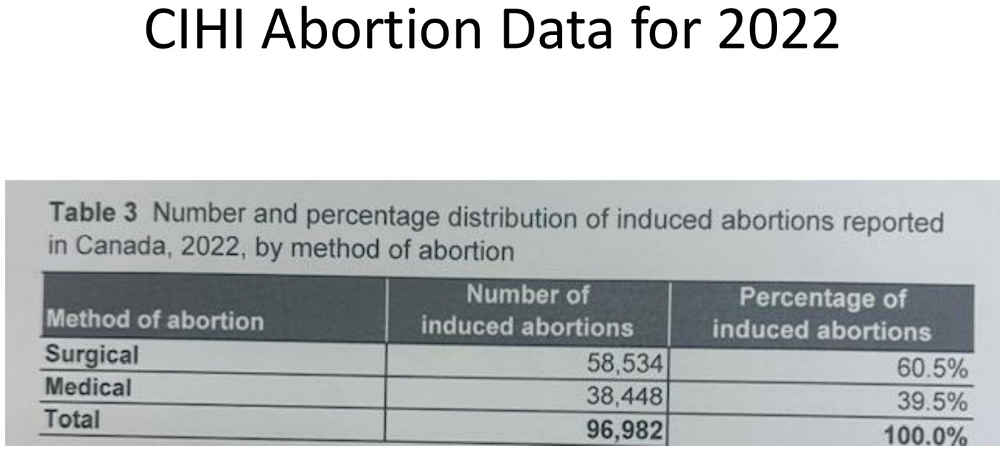
Method, 2022: surgical 60.5%, medical 39.5%. The medical share has climbed steadily since mifepristone arrived in 2017.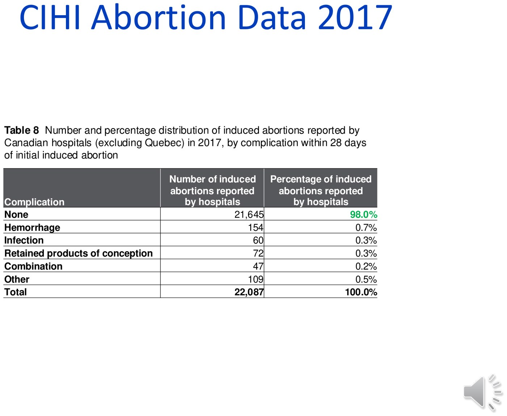
98% have no complication. The rest, in order: hemorrhage, infection, retained products, or a combination. Anything else is very rare.Two-thirds of abortions happen in the first trimester (30.4% at or before 8 weeks and 35.6% between 9 and 12 weeks, in the 2017 hospital data), and the numbers fall steadily with advancing gestation.
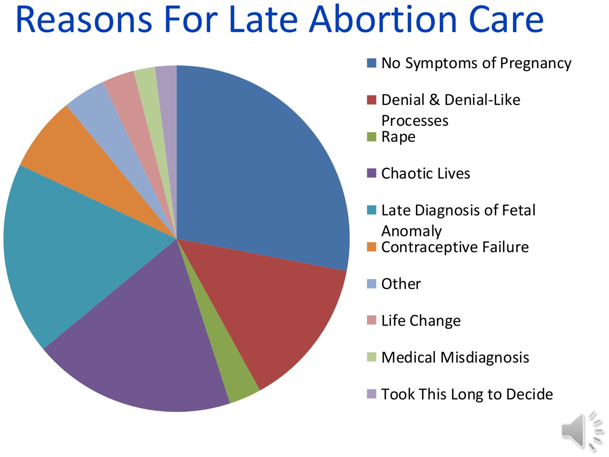
Before Any Abortion
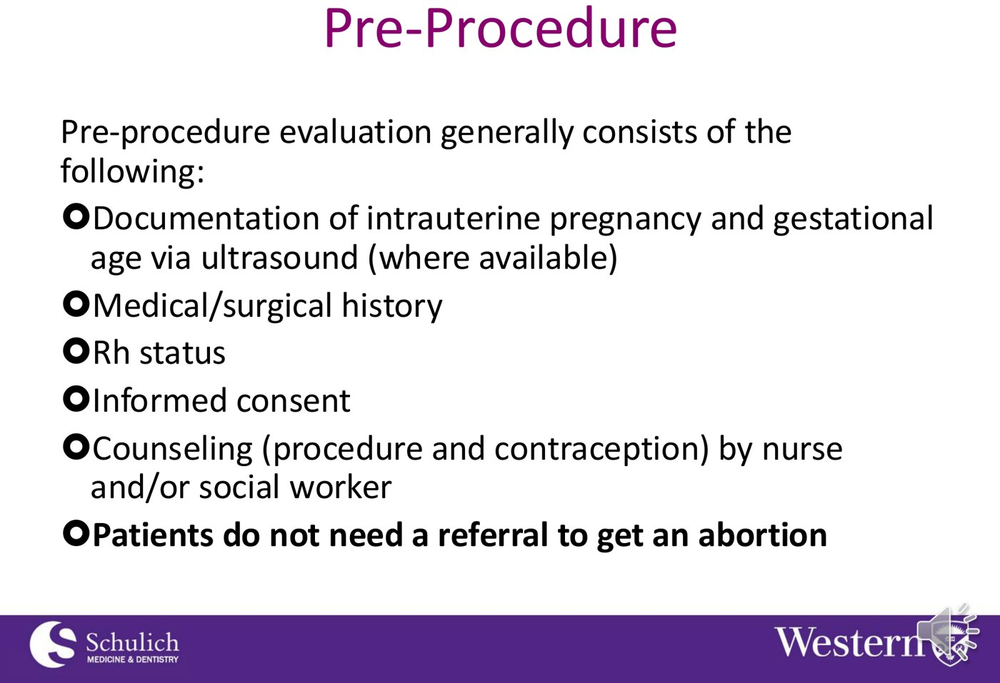
Medical Abortion
Pills, at home. The first-trimester option that has changed Canadian practice since 2017.
Choosing Medical or Surgical
![Table comparing medical and surgical abortion. Medical: usually avoids invasive procedure; avoidance of anaesthetic but oral analgesics can be used; days to weeks for completion; available during early gestational age; high success rate 95 to 99%; requires follow-up to completion; bleeding may be perceived as heavy; patient-controlled in the privacy and natural setting of own home. Surgical: need for invasive procedure either in clinic or OR; possible need for anaesthetic or sedation; predictable time frame; available at slightly later gestational age; high success rate 99%; follow-up not required; bleeding commonly perceived as light; health care provider-performed.](../../../../assets/images/week-4/abortion-in-canada/medical-vs-surgical.jpg)
Mifepristone and Misoprostol
| Drug | What it is | What it does |
|---|---|---|
| Mifepristone (RU-486) | Anti-progestin, a derivative of norethindrone | Binds the progesterone receptor without activating it. Progesterone is required to maintain an early pregnancy, so blocking it causes decidual necrosis and bleeding. Also softens the cervix and increases sensitivity to prostaglandins, raising the frequency and amplitude of contractions (peak at 36–48 h) and lowering the threshold for uterine contractility. Some effect within 15 minutes |
| Misoprostol | Prostaglandin E1 analogue | Cervical ripening: less collagen, more soluble collagen, more matrix metalloproteinases, collagen degradation. Uterine contraction: inhibits adenylyl cyclase → less cAMP → more calcium → increased uterine tone |
| Methotrexate (older option) | Antimetabolite blocking dihydrofolate reductase | Blocks DNA synthesis, acting on the cytotrophoblast rather than the embryo, so implantation stops. Used up to 49 days. Teratogenic (cranial malformations, palsies, growth delay, limb deformities), so follow-up is essential |
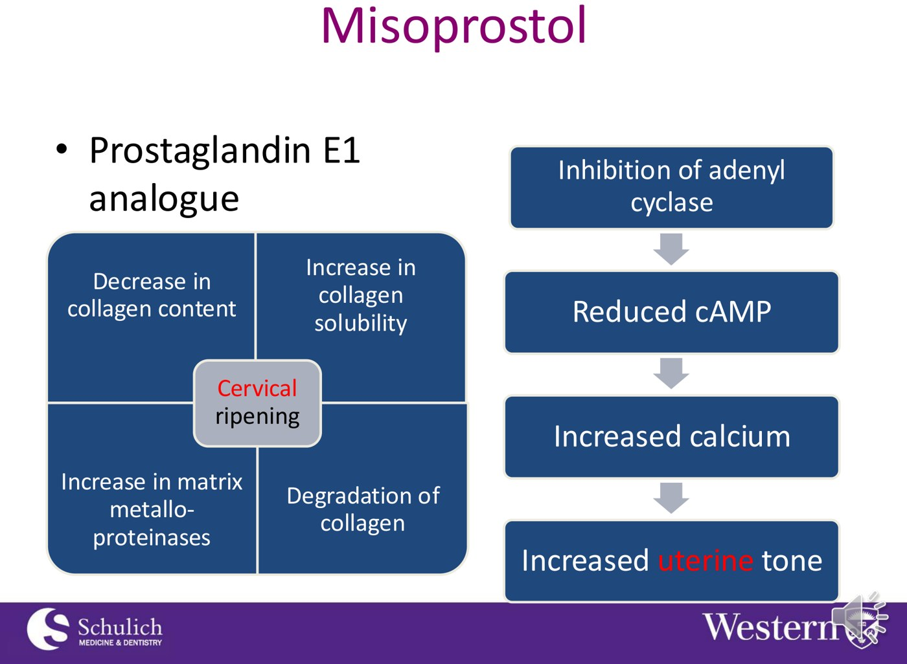
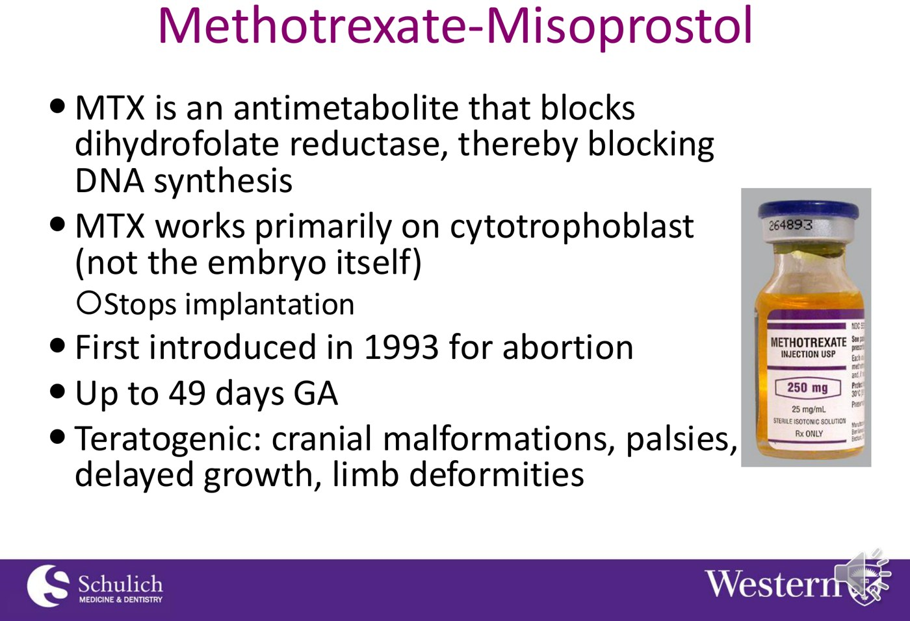
Some providers claim that high-dose progesterone after mifepristone can reverse it. It can't. The patient is still making just as much progesterone as before; the problem is that the receptor is blocked. Mifepristone is all-or-nothing at the receptor: flooding the system with progesterone does not undo it. Changing one's mind after taking it is, in any case, very uncommon given the counselling beforehand.
The Protocol and the Follow-Up
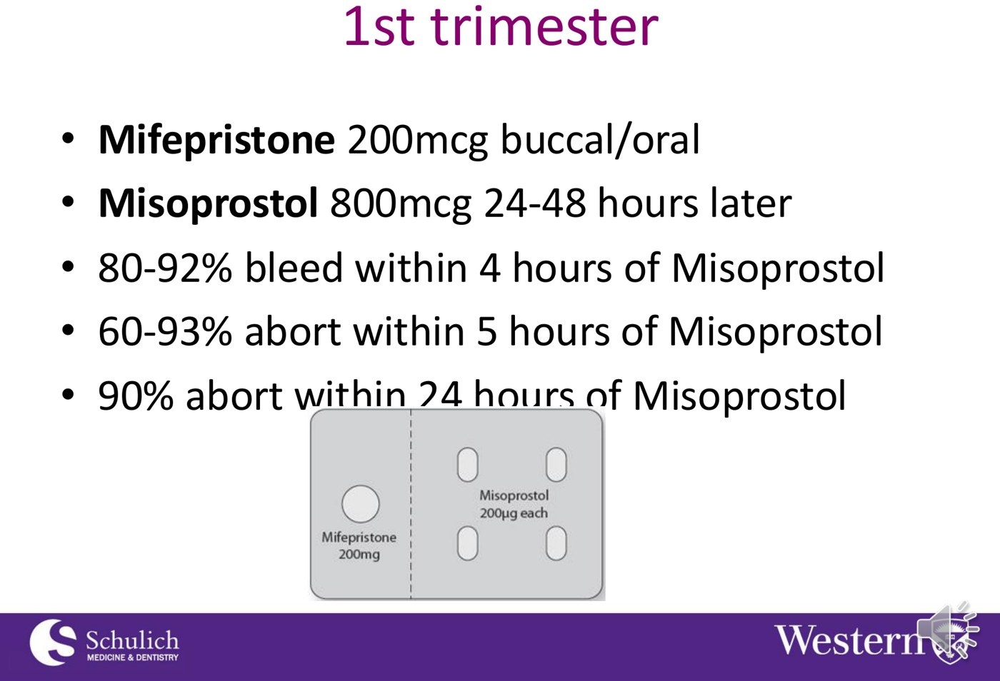
Mifegymiso: mifepristone first, then misoprostol 800 µg 24–48 h later (usually buccal: fewer GI effects than oral, better tolerated than vaginal). 90% abort within 24 h of the misoprostol.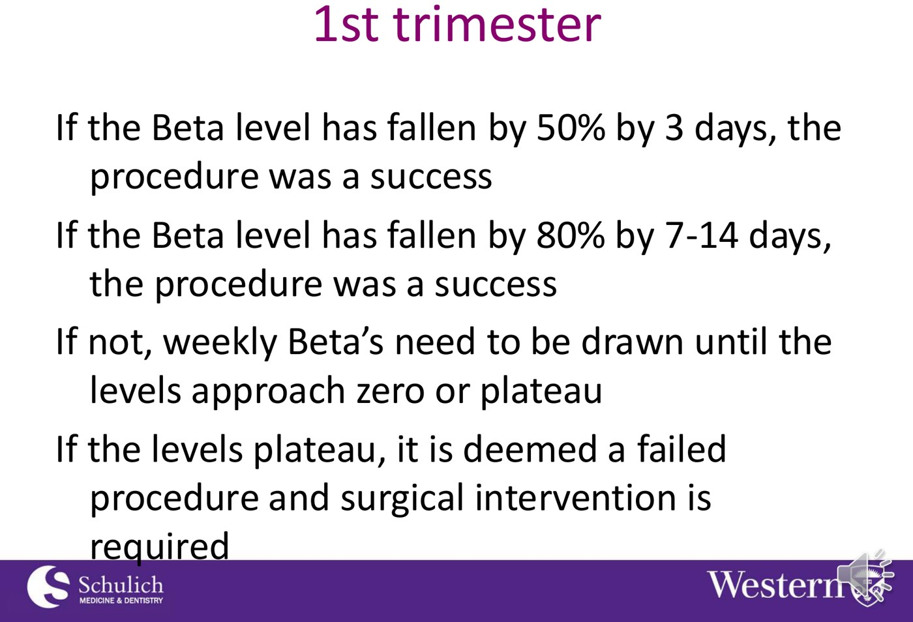
Confirming it worked. ↓50% by day 3, or ↓80% by 7–14 days = success. A plateau means failure and needs surgery. Some patients follow up with ultrasound instead, at 2 weeks (earlier scans often show a thick endometrium the uterus will clear on its own).| Mifepristone + misoprostol | Methotrexate + misoprostol | |
|---|---|---|
| Up to | 70 days (10 weeks) | 49 days (7 weeks) |
| Regimen | Mifepristone 200 mg buccal/oral, then misoprostol 800 µg 24–48 h later | Day 1: MTX 50 mg/m² IM. Day 5–7: misoprostol 600 µg vaginally; if no bleeding in 24 h, another 800 µg. Day 8: quantitative β-hCG; repeat a week later with an office visit |
| Success | 95–98% | Lower; used when mifepristone isn't available or is contraindicated |
| If it fails | >50% complete with a second 800 µg dose; <5% (about 3%) need surgical evacuation | Surgical evacuation, and it must happen: MTX is teratogenic |
A slide typo to know: the dosing slide writes mifepristone as "200 mcg". The dose is 200 mg. The misoprostol dose, 800 µg, is correct.
| Advantages | Disadvantages |
|---|---|
| Non-invasive · patient autonomy and control · private, at home · inexpensive (covered by OHIP; about $350 without coverage) · technically simple, can be provided from an office and a pharmacy · same-day start · an option when the uterine cavity can't be accessed surgically | Both patient and physician must commit to follow-up (up to 10% need at least one reminder) · longer treatment interval · GI side effects: diarrhea, stomach pain, nausea · 10% have delayed evacuation over days to weeks · heavy bleeding and cramps when the pregnancy passes (codeine-containing analgesia is usually prescribed) · up to 5% (typically ~3%) fail |
Surgical Abortion
Manual vacuum aspiration, D&C in the first trimester, and D&E in the second.
Manual Vacuum Aspiration (MVA)
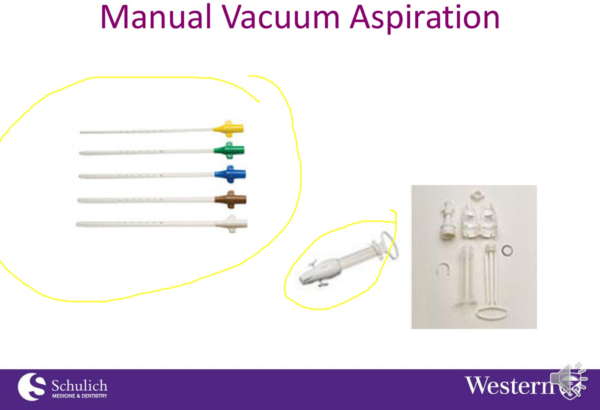
The cannulas and the aspirator.- Up to 10 weeks gestation.
- Paracervical block with 1% lidocaine at a minimum; other sedation offered if available.
- Most patients, especially nulliparas, need some cervical dilatation.
- Transilluminate the tissue to confirm chorionic villi and a gestational sac, or do a post-procedure ultrasound to confirm an empty uterus.
- Failure rate 0.25%.
- Good for: office setting, immediate, private, local anaesthetic only, cost-effective. Not for: contraindications to local anaesthesia, a patient who can't cooperate with the exam, or very young or distressed patients who may need sedation.
Dilatation & Curettage (Suction D&C)
Vacuum or suction aspiration up to and including 14+0 weeks, using a rigid cannula on an electric suction machine. It can be done under local with a cervical block, but conscious or moderate sedation is usually offered, and general anaesthetic in some hospital settings.
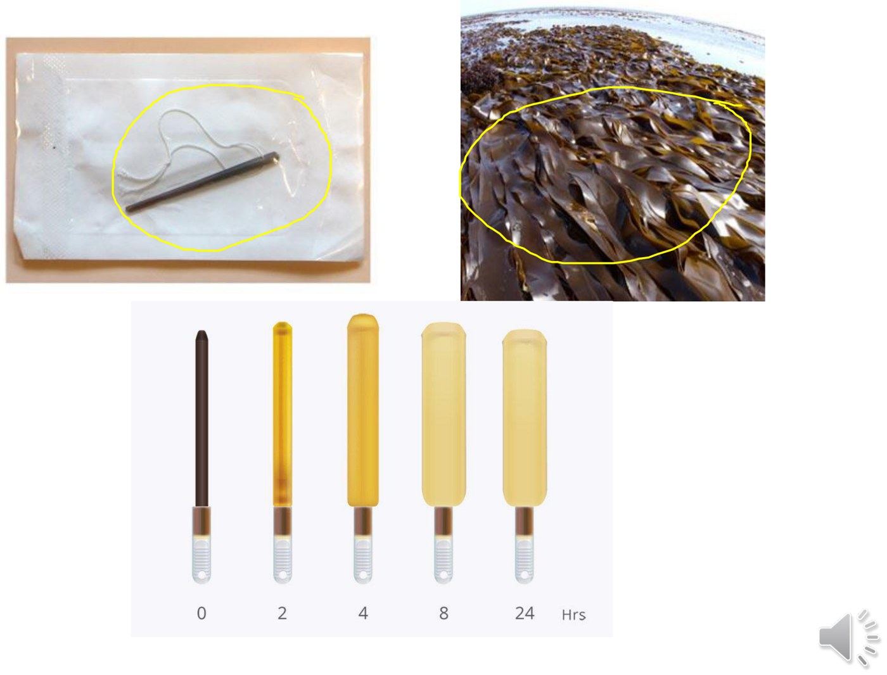
Cervical preparation. Chemical: misoprostol orally, buccally or vaginally 1–12 h before. Osmotic: laminaria (a seaweed) or synthetic Dilapan, placed in the internal os 24 h before, which slowly absorb fluid and open the cervix (the photo shows one expanding over 24 h).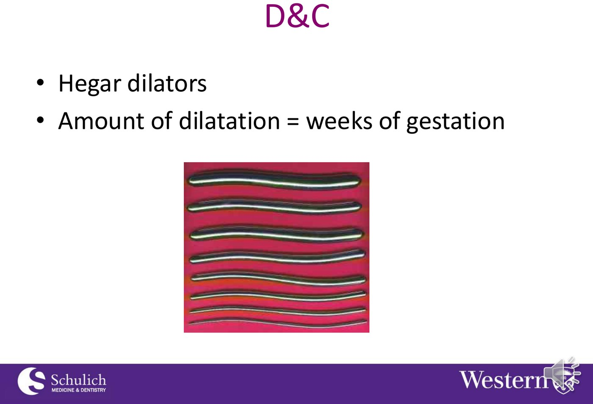
Hegar dilators, sized in millimetres. Rule of thumb: dilate to about the number of weeks' gestation (a 12-week pregnancy → about 12 mm).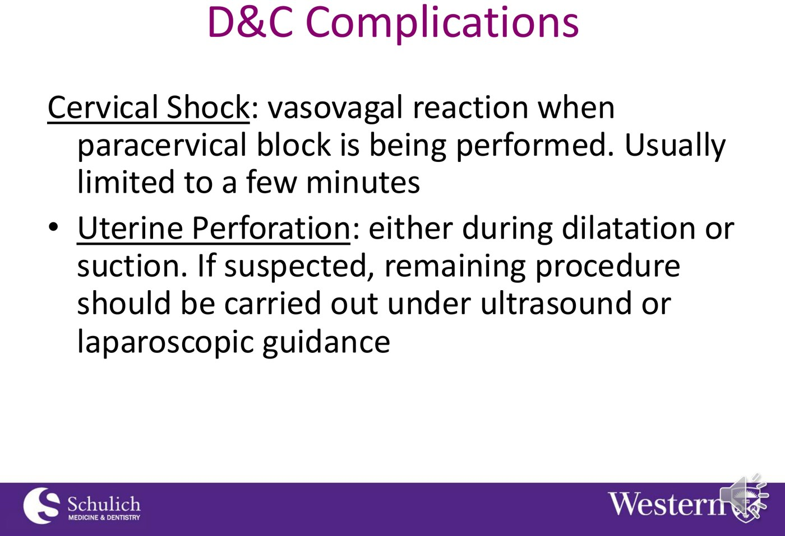
| Complication | Recognize it by | Do |
|---|---|---|
| Hemorrhage | More likely with uterine atony, a low implantation or a larger gestational age | A repeat curettage may be needed to confirm everything is out |
| Hematometra (post-abortal syndrome) | Blood collecting in the cavity: excruciating pain, an enlarging uterus, little or no bleeding, often urinary retention | Re-evacuate immediately |
Advantages of D&C over medical abortion: less risk than general anaesthesia (it can be done with conscious sedation), faster recovery, much less bleeding afterwards, quicker discharge without required follow-up, high patient acceptance and cost-effectiveness.
Second Trimester
| Surgical: D&E | Medical: induction of labour | |
|---|---|---|
| How | Pre-operative cervical ripening (osmotic, mechanical and/or medical), ± fetal intracardiac injection of digoxin or KCl, then decompression and removal of the uterine contents, usually under general anaesthetic. Beyond 18 weeks, serial applications of dilators | Misoprostol induction, generally after intracardiac KCl or digoxin |
| Up to | Generally 25 weeks | Used beyond that, and for genetic terminations |
| Advantages | Fewest complications of the second-trimester methods; much shorter from start to finish; fewer retained products | Allows the pregnancy to be delivered whole for autopsy or genetic examination, and allows memory-making for families |
| Risks | General anaesthetic, uterine perforation, hemorrhage, infection (multiple instrumentations), incomplete procedure — all rising with gestational age | Length (24 h or more), bleeding, and retained placenta: 5–10% need an urgent D&C or D&E anyway |
The lecture's own point: the greatest obstacle to safe D&E in Canada is the shrinking number of skilled practitioners. That is starting to turn around, helped by a second-trimester providers group formed during the pandemic so that clinicians know who offers what.
Counselling: Risk, Contraception and Fertility
The parts of the visit that happen before and after the procedure itself.
Compared With Continuing the Pregnancy
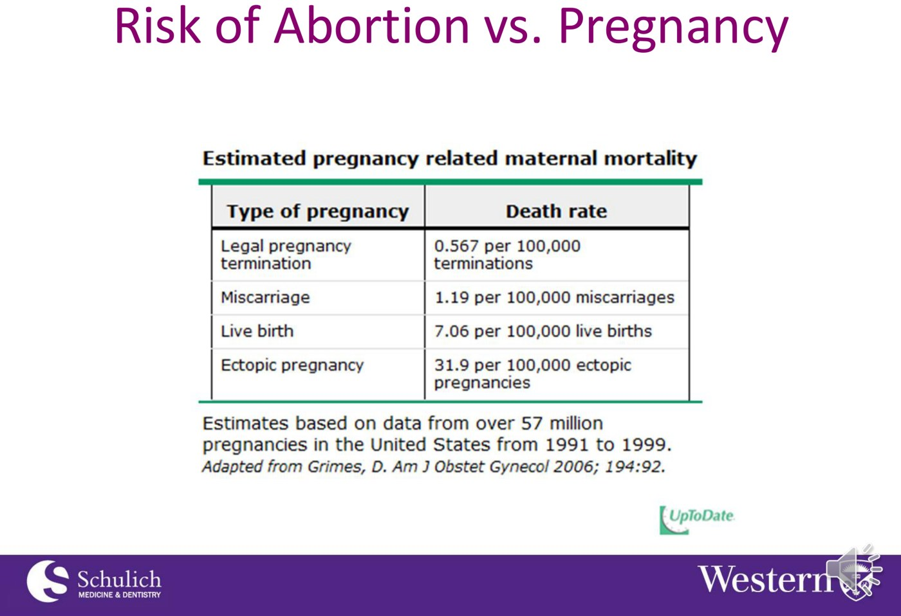
Contraception Afterwards
- Ovulation can return as early as 2 weeks after a first-trimester abortion, so contraception should start immediately if wanted.
- Every method is appropriate: having an abortion is not a contraindication to anything. Review all of them.
- Timing: a pill, patch, ring or Depo-Provera can start the same day as a surgical abortion, or on the day of the day-3 bloodwork after a medical one. An IUD or implant can go in during the surgical procedure (painless under sedation), or at the two-week visit once a medical abortion is confirmed complete. Expulsion is slightly higher when an IUD is placed immediately (3.8%), but still under 5%.
- If a method failed, offer a different one — and work out why it failed: cost, trouble swallowing or remembering pills, fear of needles, a partner who won't use condoms, or a medical reason to avoid estrogen (previous DVT, migraine with aura, smoking over half a pack a day over age 35). IUDs have their own limits, such as a uterine malformation or the cost of insertion and removal.
- If the procedure is done by a surgeon under general anaesthetic and the patient has completed childbearing, a tubal ligation can be offered at the same time.
Fertility and Emotions Afterwards
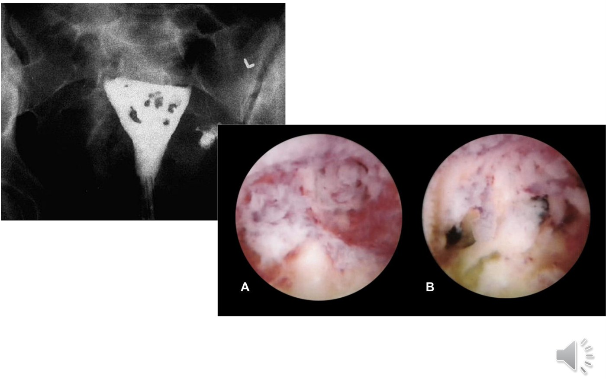
Asherman syndrome. Left, the HSG: black filling defects inside the triangular cavity are adhesions. Right, hysteroscopy: the cavity isn't open and smooth, it's stuck together.- The most common emotional reaction is relief, sometimes with transient guilt, sadness or a sense of loss. Overall, patients are content with their decision.
- A safe abortion carries no greater risk to fertility than a D&C for miscarriage.
- Asherman syndrome: adhesions form in the endometrial cavity, sometimes causing secondary amenorrhea. Risk factors are uterine curettage (about 8% of cases), repeat curettage (most often for retained products or retained placenta postpartum), and infection. The slide puts the risk at up to 30% with a third consecutive procedure.
- Trauma is the major cause of intrauterine adhesions; the role of infection is controversial and hard to separate out, because infected products usually mean retained products, which mean another procedure.
- After a single, uncomplicated first- or second-trimester procedure, the risk is very low.
The Myths, Answered
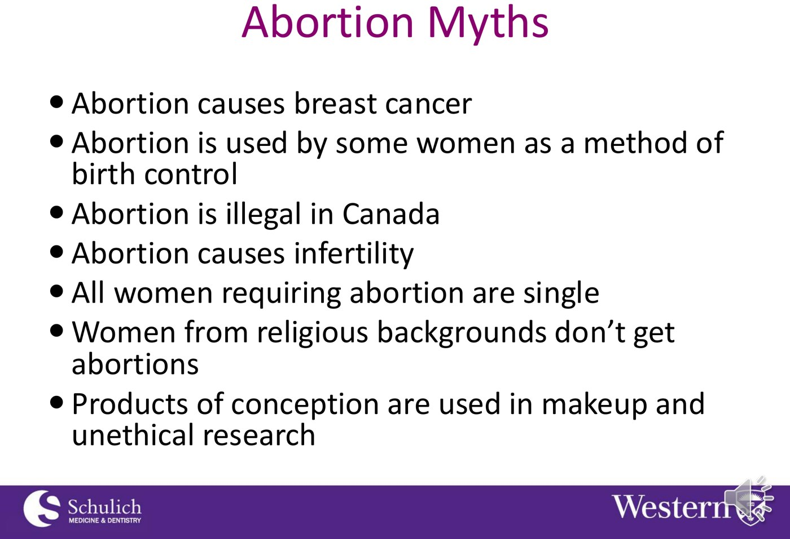
| Myth | The answer |
|---|---|
| Abortion causes breast cancer | No evidence. The only biologically plausible thread is that breastfeeding slightly lowers breast cancer risk, so not carrying a pregnancy to term means not breastfeeding — which is no different from never being pregnant, or choosing not to breastfeed |
| It's used as birth control | The decision is almost never taken lightly. Patients needing repeat abortions are often experiencing reproductive coercion, financial hardship, isolation, abuse or trafficking, or have medical contraindications to contraception (or believe the myths about it) |
| It's illegal in Canada | No. There is no federal law. (US law is a separate, shifting picture; very few patients cross the border for care here) |
| It causes infertility | No, as above |
| Only single women have abortions | 80% are unmarried, so 1 in 5 are in a committed relationship, and 60% already have children |
| Women from religious backgrounds don't | Abortion doesn't discriminate by culture, religion, ethnicity, income, relationship status or parity |
| Products of conception are used in makeup, vaccines or unethical research | Not accurate. Where tissue is used in research, it is with ethics approval and the patient's explicit, informed permission |
Built from Dr. Stephanie Black's "Abortion in Canada" slide deck and her 54-minute recorded lecture. All figures are slides from the deck, which cites CIHI's 2022 and 2017 abortion data, ACOG/Planned Parenthood, and Grimes (Am J Obstet Gynecol 2006) for the mortality comparison. Where the recording and the slides differ, both are given: the proportion of abortions done in the first trimester (the slide says 88%, the recording 80%) and Ontario's gestational limit (23+6 on the provincial table, 24+6 when spoken). One slide typo is corrected and flagged: mifepristone is 200 mg, not 200 mcg. Contraception is covered in 4.3 and the drugs in 4.4.